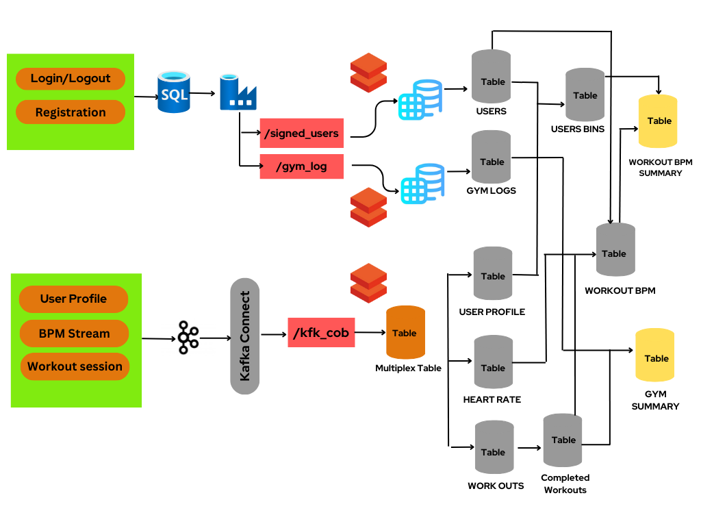

Real time Fitness tracker batch and streaming data processing using Kafka and Apache Streaming to provide the Workout and BPM statistics to the user.

- Initially Registration and user_session batch data are updated in the SQL Server, from there with the help of Azure Data Factory data is loaded into ADLS container.
- On the other hand, user_session, BPM_Stream, workout session streaming data are loaded into ADLS container utilizing kafka and Kafka connect.
- All the batch and streming table DDLs are created for loading for storage and processing.
- Raw data from the ADLS Gen2 containers is moved to Bronze layer, using Spark streaming API and Databricks compute.
- Created multiple intermediate tables joing and merging the data to generate the Workout and BPM gold data available to the user.